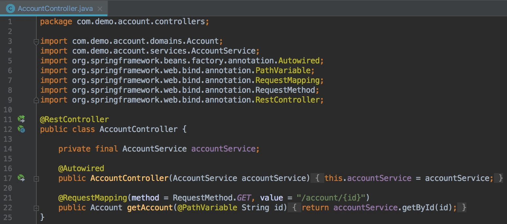
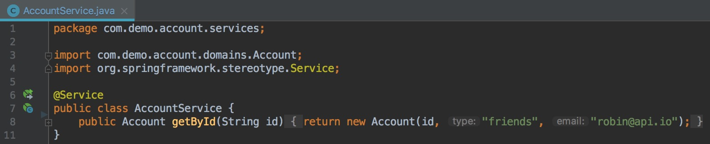
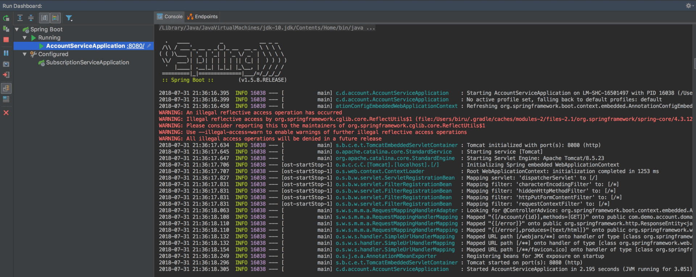
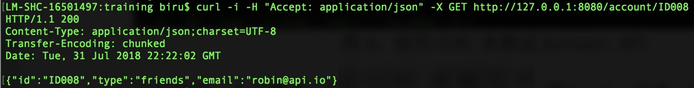
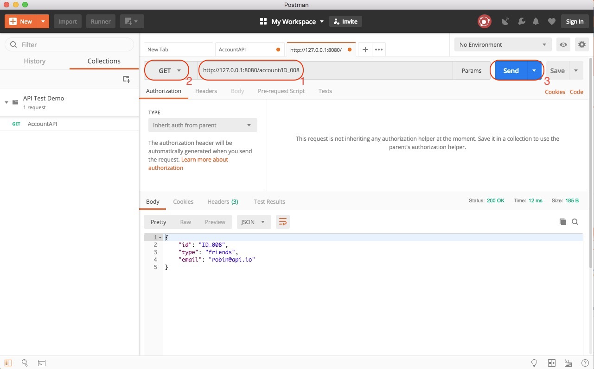
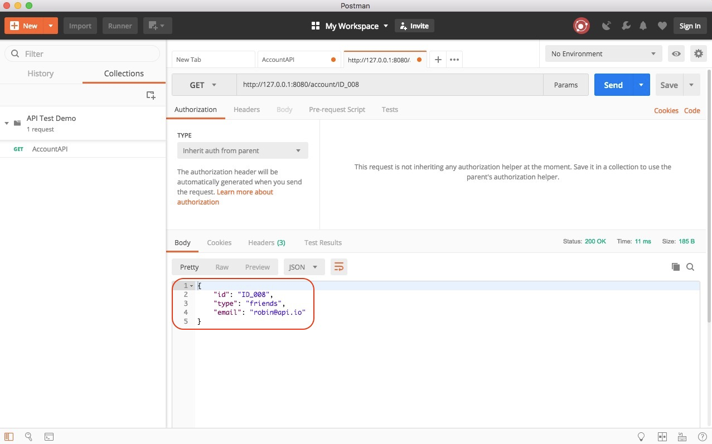
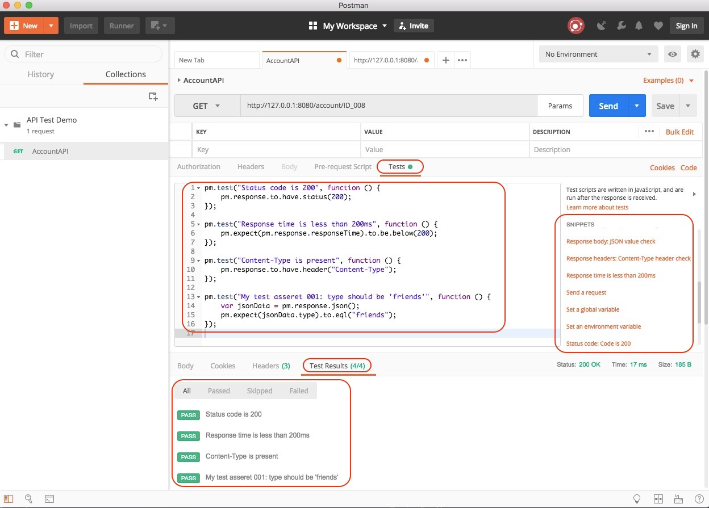
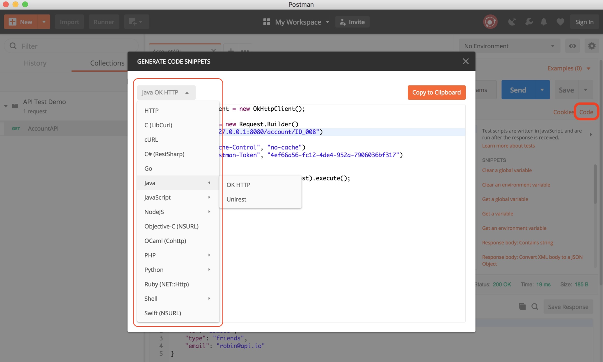

- 00 开篇词 从“小工”到“专家”，我的软件测试修炼之道.md
- 01 你真的懂测试吗？从“用户登录”测试谈起.md
- 02 如何设计一个“好的”测试用例？.md
- 03 什么是单元测试？如何做好单元测试？.md
- 04 为什么要做自动化测试？什么样的项目适合做自动化测试？.md
- 05 你知道软件开发各阶段都有哪些自动化测试技术吗？.md
- 06 你真的懂测试覆盖率吗？.md
- 07 如何高效填写软件缺陷报告？.md
- 08 以终为始，如何才能做好测试计划？.md
- 09 软件测试工程师的核心竞争力是什么？.md
- 10 软件测试工程师需要掌握的非测试知识有哪些？.md
- 11 互联网产品的测试策略应该如何设计？.md
- 12 从0到1：你的第一个GUI自动化测试.md
- 13 效率为王：脚本与数据的解耦 + Page Object模型.md
- 14 更接近业务的抽象：让自动化测试脚本更好地描述业务.md
- 15 过不了的坎：聊聊GUI自动化过程中的测试数据.md
- 16 脑洞大开：GUI测试还能这么玩（Page Code Gen + Data Gen + Headless）？.md
- 17 精益求精：聊聊提高GUI测试稳定性的关键技术.md
- 18 眼前一亮：带你玩转GUI自动化的测试报告.md
- 19 真实的战场：如何在大型项目中设计GUI自动化测试策略.md
- 20 与时俱进：浅谈移动应用测试方法与思路.md
- 21 移动测试神器：带你玩转Appium.md
- 22 从0到1：API测试怎么做？常用API测试工具简介.md
- 23 知其然知其所以然：聊聊API自动化测试框架的前世今生.md
- 24 紧跟时代步伐：微服务模式下API测试要怎么做？.md
- 25 不破不立：掌握代码级测试的基本理念与方法.md
- 26 深入浅出之静态测试方法.md
- 27 深入浅出之动态测试方法.md
- 28 带你一起解读不同视角的软件性能与性能指标.md
- 29 聊聊性能测试的基本方法与应用领域.md
- 30 工欲善其事必先利其器：后端性能测试工具原理与行业常用工具简介.md
- 31 工欲善其事必先利其器：前端性能测试工具原理与行业常用工具简介.md
- 32 无实例无真相：基于LoadRunner实现企业级服务器端性能测试的实践（上）.md
- 33 无实例无真相：基于LoadRunner实现企业级服务器端性能测试的实践（下）.md
- 34 站在巨人的肩膀：企业级实际性能测试案例与经验分享.md
- 35 如何准备测试数据？.md
- 36 浅谈测试数据的痛点.md
- 37 测试数据的“银弹”- 统一测试数据平台（上）.md
- 38 测试数据的“银弹”- 统一测试数据平台（下）.md
- 39 从小作坊到工厂：什么是Selenium Grid？如何搭建Selenium Grid？.md
- 40 从小工到专家：聊聊测试执行环境的架构设计（上）.md
- 41 从小工到专家：聊聊测试执行环境的架构设计（下）.md
- 42 实战：大型全球化电商的测试基础架构设计.md
- 43 发挥人的潜能：探索式测试.md
- 44 测试先行：测试驱动开发(TDD).md
- 45 打蛇打七寸：精准测试.md
- 46 安全第一：渗透测试.md
- 47 用机器设计测试用例：基于模型的测试.md
- 48 优秀的测试工程师为什么要懂大型网站的架构设计？.md
- 49 深入浅出网站高性能架构设计.md
- 50 深入浅出网站高可用架构设计.md
- 51 深入浅出网站伸缩性架构设计.md
- 52 深入浅出网站可扩展性架构设计.md
- 测试专栏特别放送 浅谈全链路压测.md
- 测试专栏特别放送 答疑解惑第一期.md
- 测试专栏特别放送 答疑解惑第七期.md
- 测试专栏特别放送 答疑解惑第三期.md
- 测试专栏特别放送 答疑解惑第二期.md
- 测试专栏特别放送 答疑解惑第五期.md
- 测试专栏特别放送 答疑解惑第六期.md
- 测试专栏特别放送 答疑解惑第四期.md
- 结束语 不是结束，而是开始.md
22 从0到1：API测试怎么做？常用API测试工具简介
你好，我是茹炳晟，我今天分享的主题是“从0到1：API测试怎么做？常用API测试工具简介”。
在第11篇文章《互联网产品的测试策略应该如何设计？》中，我介绍过当今互联网产品的测试策略往往会采用菱形结构，即重量级 API 测试，轻量级 GUI 测试，轻量级单元测试，由此可见API测试在现今测试中的重要性不言而喻。
这篇文章是API自动化测试系列的第一篇文章，我会先为你打好API测试的基础。所以，我会先从0到1设计一个API测试用例，通过这个测试用例，你可以体会到最基本的API测试是如何进行的，并介绍几款常用的API测试工具。
API测试的基本步骤
通常来讲，无论采用什么API测试工具，API测试的基本步骤主要包括以下三大步骤：
准备测试数据（这是可选步骤，不一定所有API测试都需要这一步）；
通过API测试工具，发起对被测API的request；
验证返回结果的response。
对API的测试往往是使用API测试工具，比如常见的命令行工具cURL、图形界面工具Postman或者SoapUI、API性能测试的JMeter等。
为了让你更好地理解API测试具体是怎么做的，并掌握常见API测试工具的使用，我会以基于主流Spring Boot框架开发的简单Restful API为例，分别介绍如何使用cURL和Postman对其进行最基本的功能测试，目的是让你对API测试有一个基本的感性认识。
基于Spring Boot构建的API
因为基于Spring Boot从0到1构建一个API，并不是本文的重点，为了不影响你对文章主要内容的把握，我直接采用了一个预先开发好的Account API为例展开讲解。你可以从https://github.com/SpectoLabs/spring-cloud-contract-blog下载完整的代码。
这个Account API的功能非常简单，就是基于你提供的ID值创建一个Account对象，并返回这个新创建Account对象。
比如，如果你的请求是“account/ID008”，那么返回的response就应该是“{“id”:“ID008”,“type”:“friends”,“email”:“[email protected]”}”。
这个Account API的功能逻辑实现非常简单，图1和图2列出了主要的代码逻辑。
图1中，代码的第21行说明了API的endpoint以及对应的操作是GET方法，第22行明确说明了GET方法具体的业务逻辑是由accountService.getById()方法实现的。

图1 RestController的实现
图2中，代码的第8行实现了accountService.getById()方法，具体逻辑就是返回一个以传入ID为ID的Account对象。

图2 具体业务逻辑的实现
我推荐使用IntelliJ打开这个下载的项目，然后直接启动其中的account-service。启动成功后，account-service会运行在本地机器的8080端口。启动成功后的界面如图3所示。

图3 成功启动基于Spring Boot的Account API
使用cURL命令行工具进行测试
首先，你需要下载安装cURL，然后就可以通过以下命令发起Account API的调用。调用结束后的界面如图4所示。
curl -i -H "Accept: application/json" -X GET "http://127.0.0.1:8080/account/ID008"

图4 使用cURL测试Account API
这行命令中参数的含义如下：
- 第一个参数“-i”，说明需要显示response的header信息；
- 第二个参数“-H”，用于设定request中的header；
- 第三个参数“-X”，用于指定执行的方法，这里使用了GET方法，其他常见的方法还有POST、PUT和DELETE等，如果不指定“-X”，那么默认的方法就是GET。
- 最后“ http://127.0.0.1:8080/account/ID008 ”，指明了被测API的endpoint以及具体的ID值是“ID008”。
当使用cURL进行API测试时，常用参数还有两个：
- “-d”：用于设定http参数，http参数可以直接加在URL的query string，也可以用“-d”带入参数。参数之间可以用“&”串接，或使用多个“-d”。
- “-b”：当需要传递cookie时，用于指定cookie文件的路径。
需要注意的是这些参数都是大小写敏感的。
了解了这几个最常用的参数后，我再来分析一些最常用的cURL命令以及使用的场景，包括Session的场景和Cookie的场景。
第一，Session的场景
如果后端工程师使用session记录使用者登入信息，那么后端通常会传一个 session ID给前端。之后，前端在发给后端的requests的header中就需要设置此session ID，后端便会以此session ID识别出前端是属于具体哪个session，此时cURL的命令行如下所示：
curl -i -H "sessionid:XXXXXXXXXX" -X GET "http://XXX/api/demoAPI"
第二，Cookie的场景
如果是使用cookie，在认证成功后，后端会返回cookie给前端，前端可以把该cookie保存成为文件，当需要再次使用该cookie时，再用“-b cookie_File” 的方式在request中植入cookie即可正常使用。具体的cURL的命令行如下所示：
// 将cookie保存为文件
curl -i -X POST -d username=robin -d password=password123 -c ~/cookie.txt "http://XXX/auth"
// 载入cookie到request中
curl -i -H "Accept:application/json" -X GET -b ~/cookie.txt "http://XXX/api/demoAPI"
最后，需要特别说明的是，cURL只能发起API调用，而其本身并不具备结果验证能力（结果验证由人完成），所以严格意义上说cURL并不属于测试工具的范畴。但是由于cURL足够轻量级，经常被很多开发人员和测试人员使用，所以我在这里做了简单的介绍。
接下来，我们再来看看如何使用目前主流的Postman完成API测试。
使用图形界面工具Postman进行测试
Postman是目前使用最广泛的Http请求模拟工具之一，常常被用于Web Service API的测试。
早期的Postman，是以Chrome浏览器的插件（plugin）形式存在的，最新版本的Postman已经是独立的应用了。我猜想是因为这个工具的应用日益广泛，所以才有了今天的独立版本。
你可以通过官方网站下载对应于Mac、Windows和Linux操作系统的不同版本，截止文章写作完成时，最新的Mac版本是6.2.2。
接下来，我就会以Mac 6.2.2版本为例，跟你分享如何用Postman完成你的API测试。如果你使用浏览器的plugin版本，或者是基于其他操作系统的版本，这都没问题，基本的操作和步骤都是一样的。
具体的操作，主要包括：
发起API调用；
添加结果验证；
保存测试用例；
基于Postman的测试代码自动生成。
第一步，发起API调用
我们的目标是对Account API做测试，所以这里你需要选择Postmant的“Request”模块。进入相应界面后，你需要按照图5的提示依次执行以下三步操作，发起Account API的调用。
在endpoint输入框中输入“http://127.0.0.1:8080/account/ID_008”；
选择“GET”方法；
点击“Send”按钮发起API调用。

图5 Postman发起Account API的测试
完成以上步骤后，界面如图6所示。我们看到返回的response默认以JSON文件的形式显示在下面的Body中。

图6 Postman执行GET后的界面
这样就完成了一次Account API的调用，是不是非常简单。但问题是，这只是一个API调用，并没有对调用结果进行自动化验证。接下来，我们就加上结果验证的部分，一起看看会有什么效果。
第二步，添加结果验证
在Postman中添加结果验证也非常方便，假定我们在Account API测试过程中有以下四个验证点：
请求的返回状态码（Status Code）应该是200；
请求的响应时间应该小于200 ms；
请求返回的response header中应该包含“Content-Type”参数；
请求返回的response body中，“type”的值应该是“friends”；
那么，接下来我们一起来看看如何使用Postman来添加这四个验证点。
为此，我们首先打开“Tests”界面，然后在右下角的“SNIPPETS”中依次点击：
“Status code: Code is 200”
“Response time is less than 200 ms”
“Response headers：Content-Type header check”
“Response body: JSON value check”
完成以上操作后，“Tests”中会自动生成验证代码，接着只要按照具体的测试要求，对这些生成的代码进行一些小修改就可以了。
在这个例子中，你只需修改需要验证的JSON键值对即可，即代码的第15行。修改完成后我们可以再次点击“Send”按钮发起测试。测试通过的界面如图7所示，最下面的“Test Results”显示四个测试全部通过。

图7 测试通过的界面
第三步，保存测试用例
测试通过后，我们往往希望可以把这个测试request保存下来，以方便后续使用，为此Postman提供了保存测试request的功能，并提供了Collection来分类管理保存多个测试request。
Collection是用来保存测试request的一个集合，Collection内部还可以建立目录结构以方便进一步的分类和管理。
这里我们点击“Save As”按钮，在弹出的对话框中可以建立Collection，并且可以命名测试request并将其保存到Collection中。
我建立了“API Test Demo”的Collection，并且将刚才的测试request命名为“AccountAPI”保存到这个Collection中。
以后再要使用这个测试request时，直接在Collection中打开它，即可使用。同时你如果申请注册了一个Postman账号，就可以很方便地在多个环境中共享这个Collection了。
第四步，基于Postman的测试代码自动生成
至此，你已经掌握了Postman最基本的使用方法，但还有一个问题没有解决。很多时候，你希望将你的测试request作为回归测试用例集成到CI/CD的流程中，这就要求可以通过命令行的方式执行你的测试。为了达到这个目的，目前有两种做法：
- 将Postman中的测试request用自动化的方式直接转换成API测试的代码。 目前Postman已经支持这个功能了，可以将保存的测试request自动化转换成常见测试框架直接支持的代码，而且支持多语言。- 比如，基于Java的“OK HTTP”和“Unirest”，基于Python的“http.client”和“Requests”，基于NodeJS的“Native”“Request”和“Unirest”，基于JavaScript的“JQuery AJAX”和“XHR”等等。你可以点击如图8所示的“Code”按钮进入代码生成界面。

图8 自动生成API测试代码
利用Newman工具直接执行Postman的Collection。 你需要先将Postman中的Collection导出为JSON文件，然后执行以下命令行。
newman run examples/sample-collection.json;
如何应对复杂场景的API测试？
我在前面分享的Restful API测试案例中，只涉及到了最基本的API的测试方法，而且测试场景也很比较简单（只是单个API的调用）。
但在实际项目中，除了这种单个API的测试场景外，还有很多复杂场景的API测试。所以，为了解决你在实际项目中可能会碰到的一些问题，我再和你聊聊目前一些常见的典型复杂场景，以及相应的测试思路和方法。
测试场景一：被测业务操作是由多个API调用协作完成
很多情况下，一个单一的前端操作可能会触发后端一系列的API调用，由于前端测试的相对不稳定性，或者由于性能测试的要求，你必须直接从后端通过模拟API的顺序调用来模拟测试过程。
这时，API的测试用例就不再是简单的单个API调用了，而是一系列API的调用，并且经常存在后一个API需要使用前一个API返回结果的情况，以及需要根据前一个API的返回结果决定后面应该调用哪个API的情况。
好在，我们已经实现了API的调用和结果解析的代码化，这也就意味着我们可以很灵活地直接用代码来处理这些场景了。 比如，通过代码将上个API调用返回的response中的某个值传递给下一个API，再比如根据上一个API的返回结果决定下一个应该调用哪个API等。
除此之外，我们还需要迫切解决的一个问题是：如何才能高效地获取单个前端操作所触发的API调用序列。
解决这个问题的核心思路是，通过网络监控的手段，捕获单个前端操作所触发的API调用序列。比如，通过类似于Fiddler之类的网络抓包工具，获取这个调用序列；又比如，目前很多互联网公司还在考虑基于用户行为日志，通过大数据手段来获取这个序列。
测试场景二：API测试过程中的第三方依赖
API之间是存在依赖关系的，比如你的被测对象是API A，但是API A的内部调用了API B，此时如果由于某种原因，API B在被测环境中处于不可用状态，那么API A的测试就会受到影响。
在单体架构下，通常只会在涉及到第三方API集成的场景中才会遇到这个问题，所以还不算严重。但是，在微服务架构下，API间相互耦合的依赖问题就会非常严重。
解决这个问题的核心思路是，启用Mock Server来代替真实的API。那么，Mock Server怎么才能真实有效地模拟被替代的API呢？这个问题，我会在分享《紧跟时代步伐：微服务模式下API测试要怎么做？》这个主题时，和你详细探讨。
测试场景三：异步API的测试
异步API是指，调用后会立即返回，但是实际任务并没有真正完成，而是需要稍后去查询或者回调（Callback）的API。
一直以来，异步API测试都是API测试中比较困难的部分。在我看来，对异步API的测试主要分为两个部分：一是，测试异步调用是否成功，二是，测试异步调用的业务逻辑处理是否正确。
- 异步调用是否成功，这个还比较简单，主要检查返回值和后台工作线程是否被创建两个方面就可以了。
- 但是，对异步调用业务逻辑的测试就比较复杂了，因为异步API通常发生在一些比较慢的操作上，比如数据库I/O、消息队列I/O等，此时测试往往需要去验证数据库中的值、消息队列中的值等，这就需要测试代码具有访问和操作数据库或者消息队列的能力。- 在实际工程项目中，这些能力一般会在测试框架级别提供，也就是说要求API测试框架中包含对应的工具类去访问和操作数据库或者消息队列等。
总结
通常情况下，无论你采用什么API测试工具，基本的测试步骤往往都是三步，即准备测试数据（并不是所有的API测试都需要这一步）、通过API测试工具发起对被测API的request、验证返回结果的response。
接下来，我通过一个简单的Restful API测试为例，和你分享了cURL和Postman这两个常用API测试工具的使用。
其中，cURL只具备发起API调用的功能，而不具备结果验证能力，所以严格地说它并不属于测试工具的范畴。Postman常常被用于Web Service API的测试具体的操作，测试流程主要包括：发起API调用、添加结果验证、保存测试用例、基于Postman的测试代码自动生成。
最后，为了帮你应对实际工程项目中复杂的API测试场景，我分享了被测业务操作是由多个API调用协作完成、API测试过程中的第三方依赖、异步API的测试，这三个复杂场景下的测试思路和方法。
思考题
单个API测试是比较简单的，但在实际项目中，往往存在按时序的API调用以及异步API调用，这类API你是如何测试的？遇到过什么难题，又是如何解决的？
感谢你的收听，欢迎给我留言讨论。
© 2019 - 2023 Liangliang Lee. Powered by gin and hexo-theme-book.